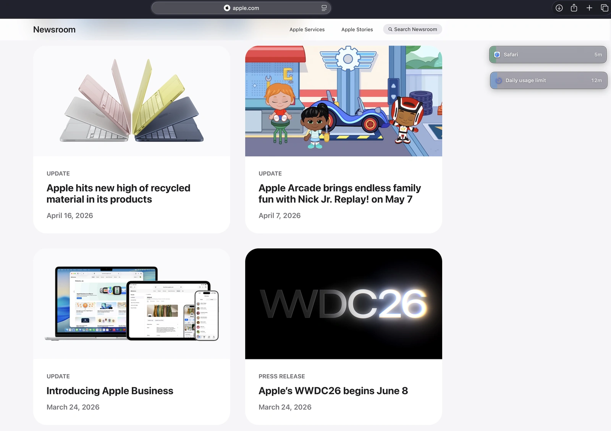
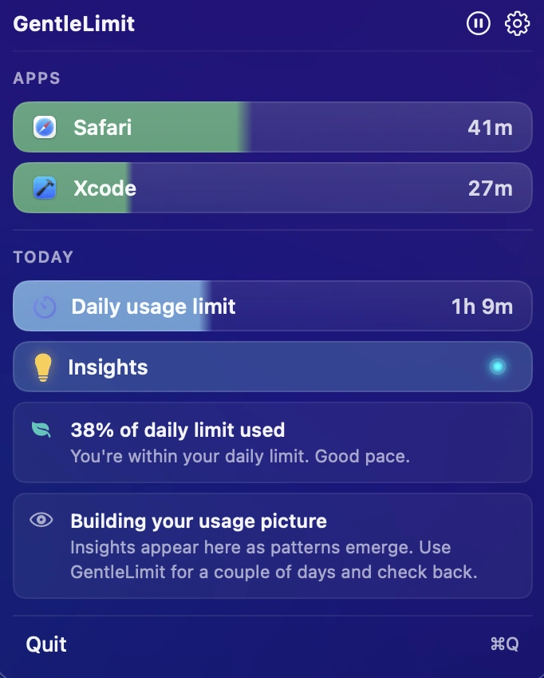
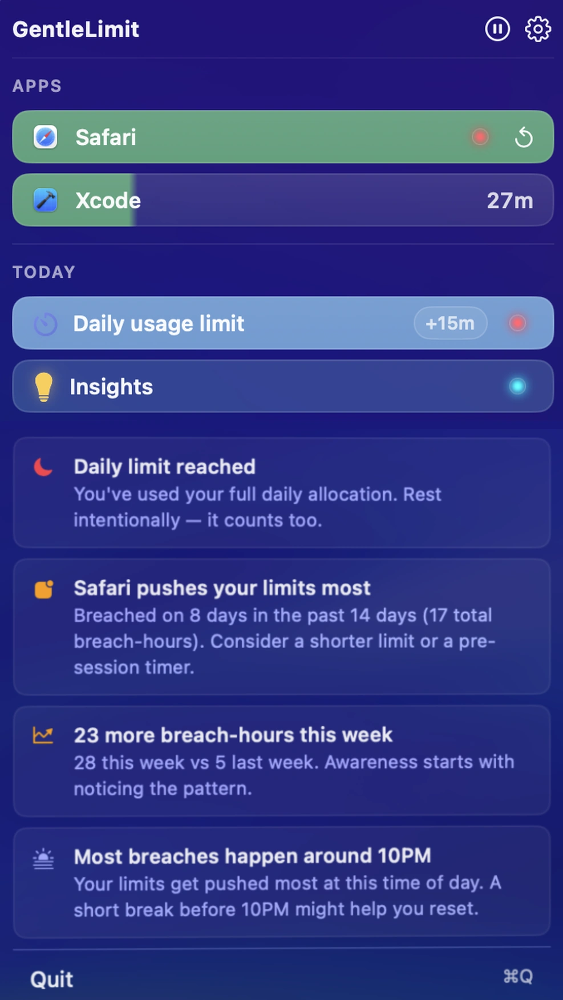
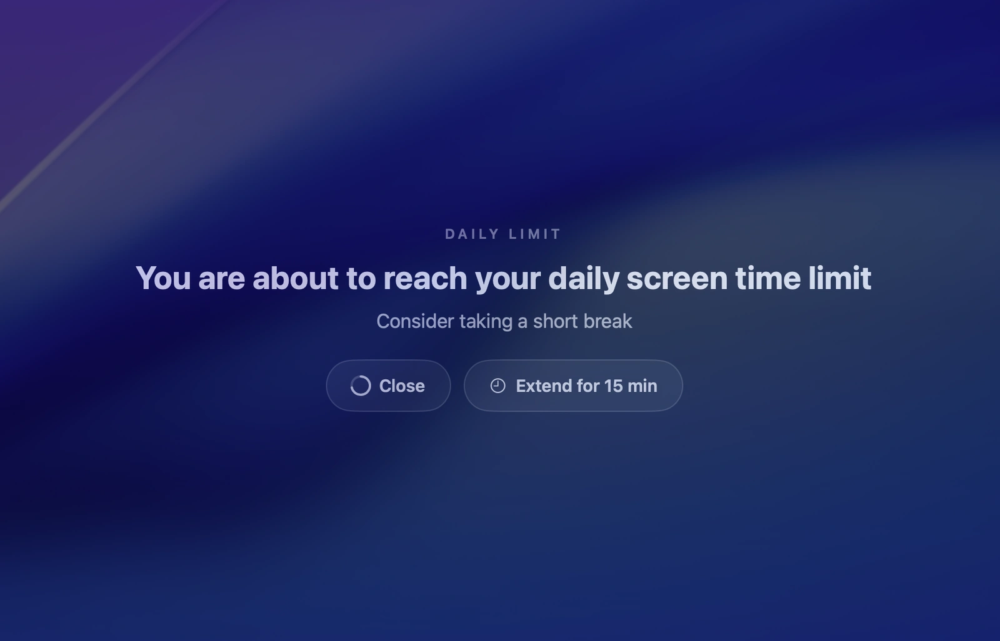
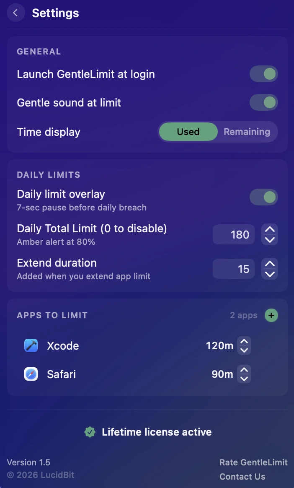

Screen Time
GentleLimit
Mindful screen time habits.
A calm, non-blocking screen time tool for macOS that keeps your usage visible through subtle signals and floating widgets, so you stay mindful without interrupting your focus.

Drag rows into floating widgets.
Stay aware in your peripheral view. Drag any monitored row out and keep usage visible without switching windows.

Your digital day, distilled.
Apps, limits, and gentle nudges in one menu. Real-time progress bars update quietly without interrupting your work.

Notice patterns in your digital habits.
Insights surface trends in how you use your Mac — immersion sessions, frequent context switches, and high-usage days.

Protect your flow
When your daily limit is reached, GentleLimit pauses the moment with a short optional overlay — a gentle reminder to step back before continuing your work.

Your Mac. Your rules.
Per-app limits, gentle cues, the time display you choose. GentleLimit adapts to your workflow — not the other way around.
Core Features
Visual Awareness
Calm progress indicators update in real time. Colors shift gently — green to amber to red — as you approach your limits. Usage stays visible without breaking your flow.
Set limits, keep control
Per-app and daily limits, tracked in real time. When you hit your daily cap, GentleLimit pauses briefly with an optional overlay — step away, or extend by a few more minutes. Never a hard block.
Gentle cues
An optional soft chime when an app reaches its limit. A subtle haptic feedback as you approach it. Configurable in Settings.
Menu Bar Native
Lives entirely in your menu bar — no dock icon, no desktop clutter. GentleLimit is always one click away and completely out of the way when you don't need it.
Private by Design
No tracking. No external analytics. Your screen time data never leaves your Mac — all monitoring and analysis run entirely on-device.
One-Time Purchase
Buy once and keep GentleLimit forever. No subscriptions, no recurring payments — just a simple one-time purchase with free updates.
Pricing
One price. Lifetime access.
One-time payment. No subscription. Get lifetime access to GentleLimit on your Mac.
No subscription. No account required.
- 7-day free trial
- One-time payment
- Lifetime updates included
- Every feature unlocked from day one
- Native macOS app (Apple Silicon)
- Fully offline & private
Secure checkout via App Store (local pricing) or Lemon Squeezy (USD, powered by Stripe).
FAQ
Will GentleLimit force-quit or block my apps?
No. GentleLimit never closes apps for you. Awareness comes through floating widgets and subtle signals — you stay in control.
How is it different from Apple Screen Time?
GentleLimit is built for active Mac use: floating widgets that follow your work, per-app daily limits with visible progress, no hard blocks. Apple Screen Time is broader and family-oriented; GentleLimit is a single-purpose Mac tool for personal awareness.
Does it require an account?
No. Fully on-device. No account, no cloud sync, no telemetry leaving your Mac.
What macOS versions are supported?
macOS 14 (Sonoma) or later, native on Apple Silicon and supported Intel Macs.
Does it work on iPhone?
Not today — GentleLimit is a Mac app. If you need iPhone parity, Apple's built-in Screen Time may fit better.
Is it a subscription?
No. $6.99 once on the Mac App Store, with a 7-day free trial. One purchase, all future updates.